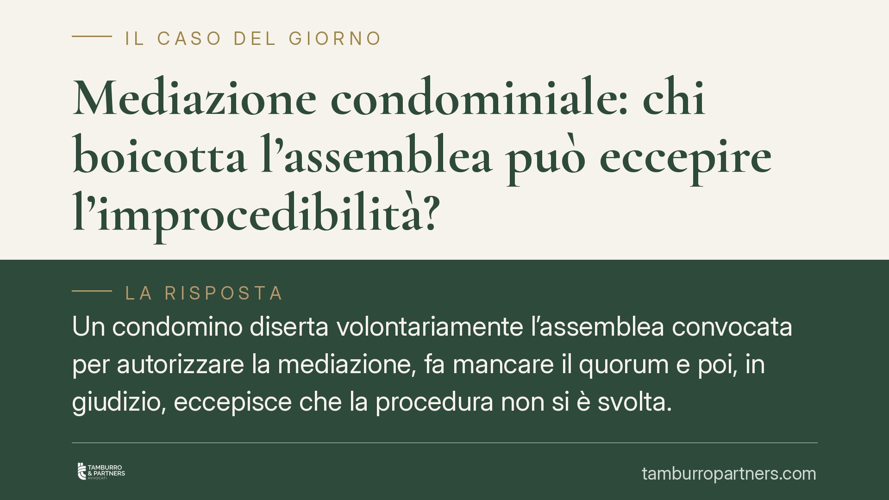

Mediazione condominiale: chi boicotta l'assemblea può eccepire l'improcedibilità?
Un condomino diserta volontariamente l'assemblea convocata per autorizzare la mediazione, fa mancare il quorum e poi, in giudizio, eccepisce che la procedura non si è svolta. Una pronuncia di merito qualifica questa condotta come abuso del diritto, contraria a buona fede e correttezza processuale. Il tema tocca la riforma Cartabia e la nuova legittimazione dell'amministratore.

Il caso
La vicenda ruota attorno a una strategia processuale tanto semplice quanto discutibile. In una lite condominiale soggetta a mediazione obbligatoria, l'assemblea viene convocata per deliberare sulla partecipazione alla procedura. Un condomino, contrario alla posizione del condominio, si assenta sistematicamente dalle convocazioni, facendo così mancare il quorum necessario a una delibera valida.
Risultato: l'assemblea non riesce a esprimersi, la mediazione non va a buon fine per impossibilità di formalizzare la volontà dell'ente. In giudizio, lo stesso condomino eccepisce l'improcedibilità della domanda, sostenendo che la condizione di procedibilità non sarebbe stata soddisfatta.
Una pronuncia di merito della Corte d'Appello di Firenze (di cui segnaliamo la necessità di verifica degli estremi definitivi presso le banche dati ufficiali) ha respinto l'eccezione, qualificando la condotta come abuso del diritto. Chi crea l'ostacolo non può poi invocarlo a proprio vantaggio.
Inquadramento normativo
La cornice è quella del D.lgs. 28/2010, profondamente ridisegnato dalla riforma Cartabia (D.lgs. 149/2022). L'art. 5 individua le materie per cui l'esperimento della mediazione è condizione di procedibilità della domanda giudiziale: significa che, senza aver tentato la mediazione, il giudice non può decidere nel merito. Tra queste materie figura espressamente il condominio.
La condizione di procedibilità non impone di raggiungere un accordo, ma di partecipare effettivamente al primo incontro. L'assenza ingiustificata di una parte può avere conseguenze processuali (anche sul piano delle spese e della valutazione del giudice).
Il punto decisivo introdotto dalla riforma è l'art. 5-ter D.lgs. 28/2010: l'amministratore di condominio è legittimato ad attivare la mediazione, a parteciparvi e a raggiungere un accordo. L'accordo resta però sottoposto all'approvazione dell'assemblea con le maggioranze di legge, e in mancanza di approvazione la conciliazione si intende non conclusa. La norma ha attenuato la precedente necessità di una delibera preventiva per la sola partecipazione: oggi l'amministratore può sedersi al tavolo senza autorizzazione anticipata, mentre la delibera resta indispensabile per vincolare il condominio all'esito.
Su questo sfondo si innesta il principio dell'abuso del diritto, ancorato ai doveri di buona fede e correttezza (artt. 1175 e 1375 c.c.) e alla lealtà processuale. Chi esercita una facoltà legittima — come assentarsi dall'assemblea — ma lo fa al solo scopo di precostituire un'eccezione difensiva, usa il diritto per uno scopo distorto rispetto alla sua funzione.
Implicazioni pratiche
La lettura fatta dalla pronuncia ha una ricaduta immediata. Il condomino che intende contestare la regolarità della mediazione non può trarre vantaggio da un ostacolo che ha deliberatamente creato. Il principio *venire contra factum proprium* — non si può contraddire il proprio precedente comportamento — chiude la strada all'eccezione strategica.
Per l'amministratore cambia il quadro operativo. Grazie all'art. 5-ter, la partecipazione al primo incontro non resta ostaggio di un'assemblea che non si forma. L'amministratore può garantire la presenza dell'ente, soddisfacendo la condizione di procedibilità, riservando all'assemblea la sola decisione finale sull'accordo.
Per gli altri condòmini, la lezione è che la diserzione mirata non è uno strumento difensivo affidabile: può ritorcersi contro chi la pratica, sul piano processuale e su quello delle spese.
Cosa fare in concreto
- Partecipate al primo incontro di mediazione, anche in disaccordo nel merito: l'assenza ingiustificata espone a conseguenze e non costruisce eccezioni spendibili.
- Documentate le convocazioni assembleari e le relative assenze: il verbale è la prova della regolarità del procedimento e dell'eventuale condotta ostruzionistica.
- Valorizzate l'art. 5-ter: l'amministratore partecipi alla mediazione per assolvere la condizione di procedibilità, senza attendere una delibera preventiva.
- Riservate all'assemblea l'approvazione dell'accordo, convocandola con un ordine del giorno chiaro e le maggioranze corrette.
- Verificate sempre gli estremi di una pronuncia prima di fondarvi una strategia: le massime circolano con numeri e date non sempre esatti.
Conclusioni
La buona fede non è un ornamento retorico: è un criterio che il giudice usa per smascherare l'uso distorto delle regole. Chi fa mancare il quorum per poi eccepire l'improcedibilità pretende di avvantaggiarsi del proprio stesso comportamento sleale. La riforma Cartabia, con l'art. 5-ter, ha ridotto gli spazi di questa manovra, consentendo all'amministratore di presidiare la mediazione a prescindere dalle intemperanze assembleari.
Contributo informativo a cura di Tamburro & Partners - Avv. Giuseppe Tamburro. Non costituisce parere legale.
Ogni condominio ha una storia a sé.
Se gestisci un'amministrazione e vuoi un confronto su una specifica questione condominiale, scrivi allo studio. Ti rispondiamo entro un giorno lavorativo.